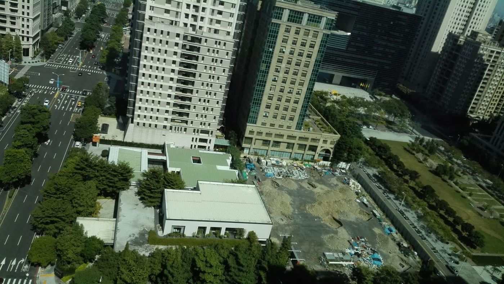

18 居住正義
金融安定を壊さずに、手が届く供給を広げる設計問題だ。

台湾は政府がとても安い住宅を出すべきだという神話に陥りがちだ。本当に大量かつ十分安く出せば、スラム階層化か、既存不動産と銀行融資を揺らし、建設停止と未完成の塔、弱者への打撃を招く。
正義を口にしつつ市場の結果を拒むのは票の詐欺だ。本当の問いは、金融安定を爆破せずに手の届く供給をどう広げるか。
スイスの教訓は深い比較的負担可能な賃貸市場であり、政府が建てて価格を半減させることだけではない。台湾は公有地・公有住宅の賃貸放出がまだ少ない。
台中七期には未着工の建設用地もある。供給・税制・融資・都市更新の規則は、単一のスローガンより若者の未来を決める。
居住正義は工学と制度の問題だ。誠実な数量モデルが要り、SNSの陣営選びだけでは足りない。

出典: 台湾の大未来 — 今日のスイス、明日の台湾 — 張渝江 · 3. 住宅と建築